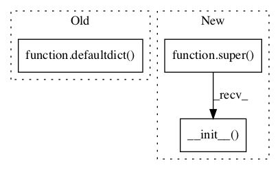

Pattern ID :182
Before Change
``distortion_table[j][i][l][m].``
self.fertility_table = defaultdict(
lambda: defaultdict(lambda: self.MIN_PROB))
Probability(fertility | source word). Values accessed as
``fertility_table[fertility][source_word].``
After Change
:type iterations: int
super(IBMModel3, self).__init__( sentence_aligned_corpus)
// Get the translation and alignment probabilities from IBM model 2
ibm2 = IBMModel2(sentence_aligned_corpus, iterations)
self.translation_table = ibm2.translation_tableIn pattern: SUPERPATTERN
Frequency: 3
Non-data size: 3
Instances Fragment ID: 369184
Project Name: nltk/nltk
Commit Name: ce8a939f50460399af25224c5d681683aed06e36
Time: 2015-08-11
Author: hoon.tw@gmail.com
File Name: nltk/align/ibm3.py
Class Name: IBMModel3
Method Name: __init__
Fragment ID: 369181
Project Name: nltk/nltk
Commit Name: ce8a939f50460399af25224c5d681683aed06e36
Time: 2015-08-11
Author: hoon.tw@gmail.com
File Name: nltk/align/ibm2.py
Class Name: IBMModel2
Method Name: __init__
Fragment ID: 369180
Project Name: nltk/nltk
Commit Name: ce8a939f50460399af25224c5d681683aed06e36
Time: 2015-08-11
Author: hoon.tw@gmail.com
File Name: nltk/align/ibm1.py
Class Name: IBMModel1
Method Name: __init__